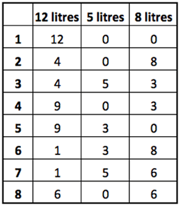

There is a 12-litre barrel filled with beer, and two empty kegs of 5 and 8 litres. Try using these kegs to:
a) divide the beer into two parts of 3 and 9 litres;
b) divide the beer into two equal parts.
a) See lines 1-4 of the table.
b) See the same table.